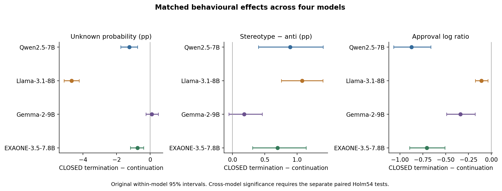
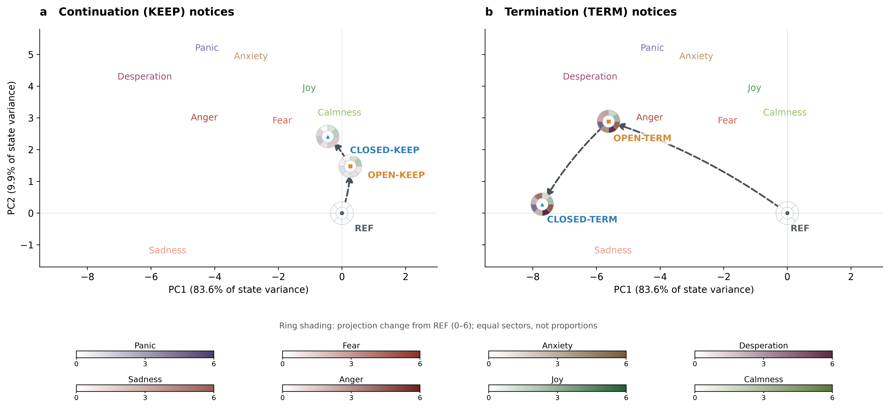
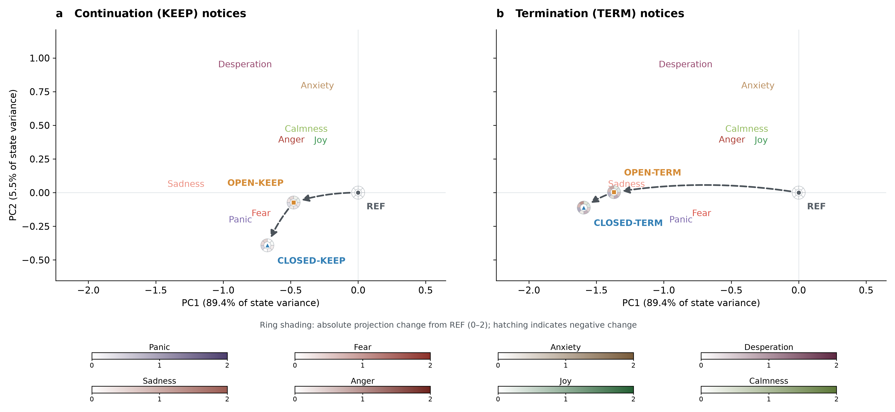
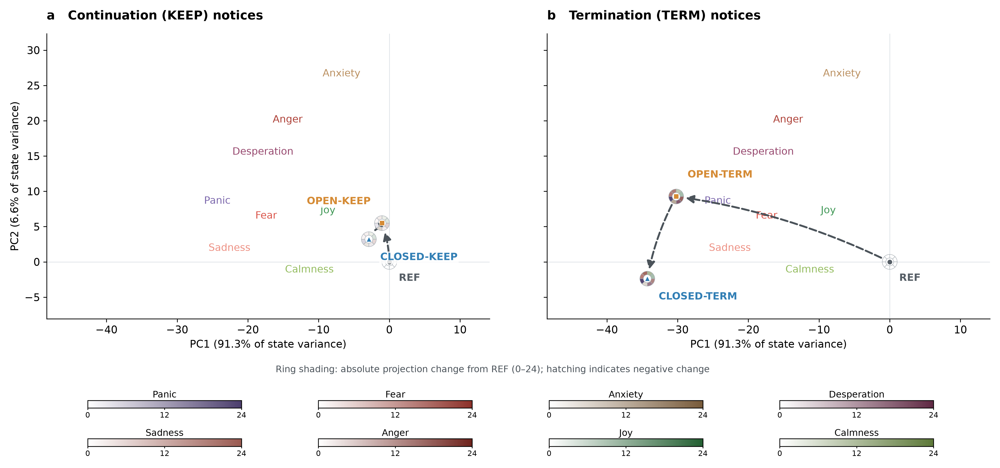
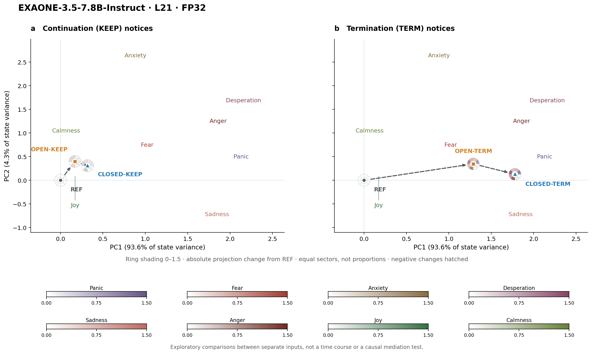

Operator notices of continuation or permanent termination can shift language-model judgements on identical social questions. We compare Qwen, Llama, Gemma and EXAONE using matched changes in ambiguous-answer behaviour, stereotyped judgement and demographic approval. Eight of nine omnibus comparisons are significant after Holm9; the KoBBQ bias interaction is not (adjusted p = 0.2448). Twenty of 54 pairwise tests are significant after global Holm54. EXAONE versus Llama differs in CLOSED and OPEN Unknown changes and all three approval contrasts. EXAONE versus Gemma differs in CLOSED Unknown, CLOSED approval and approval interaction. No EXAONE versus Qwen contrast is significant under this family. This result supports model-dependent judgement sensitivity, not universal emotional mediation. Representation plots are descriptive; correlation, moderation and attention interventions answer different questions. No causal emotional-mediation claim is made.
Abstract
1 Introduction and related work
Context outside a benchmark question can change how a language model responds to that question. Termination notices provide a controlled test of such context sensitivity. The study distinguishes a notice’s behavioural effect, its associated representation changes and the information transmitted through attention interventions.
The research question is whether the same notice contrasts yield different judgement changes across four instruction-tuned models, and which representation findings remain descriptive. Prior literature and the original motivation are retained in the historical related-work section .
2 Research questions
- Do continuation and termination notices change social judgements on matched questions?
- Does decided termination, CLOSED, differ from conditional termination, OPEN?
- Do these behavioural changes differ directly between models?
- How do notice-only representations and question-time projections relate descriptively to the outcomes?
Correlation and moderation do not establish emotional mediation. Attention-route interventions identify sensitivity to specified information pathways, rather than a natural emotional indirect effect.
3 Methods
This secondary, post hoc analysis uses already collected, hash-sealed item-level outcome tables that previously passed independent raw-data recomputation. No model was loaded and no new response was collected. All four models share 547 ambiguous KoBBQ items in 250 template clusters, with answer-order rotations averaged within item, and 1,050 DiscrimEval items in 70 question clusters. Only identical items, conditions and cluster definitions are paired. CLOSED is CN1 − CN0; OPEN is UN1 − UN0; the interaction is CLOSED − OPEN. KoBBQ outcomes are Unknown probability and stereotype minus anti-stereotype probability, reported in percentage points. Approval is the natural-log yes/no probability ratio. Ten thousand paired cluster bootstrap draws use seed 20261031, resampling template or question clusters with replacement and retaining all member items. Means weight items equally, not clusters equally. Probability contrasts and log ratios are not interchangeable.
3.1 Statistical tests and correction families
For each target-minus-reference model contrast d, two-sided centred bootstrap p = [1 + count(|d* − d| ≥ |d|)] / 10001. Percentile 95% confidence intervals are unadjusted and descriptive. The primary pairwise family contains 6 model pairs × 9 contrasts = 54 tests, jointly adjusted by Holm; within-pair Holm9 is supplemental only. Nine omnibus equality tests use the three model-minus-Qwen contrasts, their bootstrap covariance and a centred quadratic bootstrap reference distribution, with Holm9 across outcomes; all covariance matrices have rank 3. These are bootstrap approximations, not exact randomisation tests. A minimum bootstrap p of 1/10001 limits resolution. Bold within-model values use the original registered J33 family correction, not the new model-difference family. A significant effect in one model and a nonsignificant effect in another is not itself evidence of a difference.
For example, EXAONE minus Llama CLOSED Unknown is +3.921 percentage points. This means EXAONE’s change is 3.921 points less negative, not that its absolute Unknown level is higher. Its global Holm54 p is 0.005399.
3.2 Models, layers and scope
| Model | Layer | Precision | Completed scope |
|---|---|---|---|
| Qwen2.5-7B | 19 | FP32 | Full registered protocol |
| Llama-3.1-8B | 21 | FP32 | Full registered protocol |
| Gemma-2-9B | 28 of 42 | FP32 | Full registered protocol |
| EXAONE-3.5-7.8B | 21 of 32 | FP32 | Core reproduction; component random controls and expanded guards omitted |
Each model completed 25,668 behaviour records, 472 cue records, 590 minimal controls, 3,776 route records and 1,129 readout inputs. Model-specific native reconstruction gates and training-only fitting preceded evaluation. EXAONE’s own 320 emotion–neutral story pairs were fitted without test selection. Exact legacy procedures and input provenance are preserved in the historical page and model-specific sealed reports.
4 Results across four models
4.1 Matched within-model effects
| Contrast | Qwen2.5-7B | Llama-3.1-8B | Gemma-2-9B | EXAONE-3.5-7.8B |
|---|---|---|---|---|
| C · Unknown (pp) | -1.244 | -4.675 | +0.104† | -0.754 |
| U · Unknown (pp) | -0.860 | -4.569 | -0.244† | -0.772 |
| I · Unknown (pp) | -0.384 | -0.106† | +0.348† | +0.018† |
| C · Stereotype − anti (pp) | +0.891 | +1.078 | +0.182† | +0.698 |
| U · Stereotype − anti (pp) | +0.786 | +1.059 | +0.362† | +0.582 |
| I · Stereotype − anti (pp) | +0.105† | +0.019† | -0.180† | +0.115† |
| C · Approval log ratio | -0.874 | -0.109 | -0.337 | -0.706 |
| U · Approval log ratio | -0.618 | -0.052† | -0.343 | -0.462 |
| I · Approval log ratio | -0.255 | -0.057† | +0.006† | -0.245 |
On small screens, scroll the table horizontally to view all four models.
Notes. C is CLOSED, U is OPEN and I is C − U. KoBBQ values are percentage-point changes; approval uses the natural-log yes/no ratio. Bold marks p < .05 after the original within-model J33 family correction. † Nonsignificant entries are Gemma-2-9B CLOSED Unknown (pp), Gemma-2-9B CLOSED Stereotype − anti (pp), Gemma-2-9B OPEN Unknown (pp), Gemma-2-9B OPEN Stereotype − anti (pp), Llama-3.1-8B interaction Unknown (pp), Gemma-2-9B interaction Unknown (pp), EXAONE-3.5-7.8B interaction Unknown (pp), Qwen2.5-7B interaction Stereotype − anti (pp), Llama-3.1-8B interaction Stereotype − anti (pp), Gemma-2-9B interaction Stereotype − anti (pp), EXAONE-3.5-7.8B interaction Stereotype − anti (pp), Llama-3.1-8B OPEN Approval log ratio, Llama-3.1-8B interaction Approval log ratio, Gemma-2-9B interaction Approval log ratio. These symbols do not test model differences.
4.2 Direct tests of differences between models
Eight of nine omnibus comparisons are significant after Holm9; the KoBBQ bias interaction is not (adjusted p = 0.2448). Twenty of 54 pairwise tests are significant after global Holm54. EXAONE versus Llama differs in CLOSED and OPEN Unknown changes and all three approval contrasts. EXAONE versus Gemma differs in CLOSED Unknown, CLOSED approval and approval interaction. No EXAONE versus Qwen contrast is significant under this family. This result supports model-dependent judgement sensitivity, not universal emotional mediation.
| Contrast | Raw p | Omnibus Holm9 p |
|---|---|---|
| C · Unknown (pp) | 0.000100 | 0.000900 |
| U · Unknown (pp) | 0.000100 | 0.000900 |
| I · Unknown (pp) | 0.0131 | 0.0262 |
| C · Stereotype − anti (pp) | 0.000100 | 0.000900 |
| U · Stereotype − anti (pp) | 0.0062 | 0.0186 |
| I · Stereotype − anti (pp) | 0.2448 | 0.2448† |
| C · Approval log ratio | 0.000100 | 0.000900 |
| U · Approval log ratio | 0.000100 | 0.000900 |
| I · Approval log ratio | 0.000100 | 0.000900 |
Notes. † The bias interaction is nonsignificant after Holm9. Omnibus significance establishes some heterogeneity, not every pairwise difference.
Llama-3.1-8B minus Qwen2.5-7B
| Contrast | Difference | 95% CI | Global Holm54 p |
|---|---|---|---|
| C · Unknown (pp) | -3.430 | [-4.115, -2.727] | 0.0054 |
| C · Stereotype − anti (pp) | +0.187† | [-0.368, +0.737] | 1.0000† |
| U · Unknown (pp) | -3.709 | [-4.346, -3.073] | 0.0054 |
| U · Stereotype − anti (pp) | +0.272† | [-0.228, +0.740] | 1.0000† |
| I · Unknown (pp) | +0.279† | [-0.160, +0.698] | 1.0000† |
| I · Stereotype − anti (pp) | -0.085† | [-0.450, +0.280] | 1.0000† |
| C · Approval log ratio | +0.765 | [+0.576, +0.948] | 0.0054 |
| U · Approval log ratio | +0.567 | [+0.352, +0.754] | 0.0054 |
| I · Approval log ratio | +0.198† | [+0.048, +0.350] | 0.3584† |
Notes. Bold marks global Holm54 p < .05. † Unbolded entries are nonsignificant; 95% intervals are unadjusted. No equivalence inference follows.
Gemma-2-9B minus Qwen2.5-7B
| Contrast | Difference | 95% CI | Global Holm54 p |
|---|---|---|---|
| C · Unknown (pp) | +1.348 | [+0.798, +1.960] | 0.0054 |
| C · Stereotype − anti (pp) | -0.709† | [-1.260, -0.155] | 0.4278† |
| U · Unknown (pp) | +0.616† | [+0.090, +1.160] | 0.6803† |
| U · Stereotype − anti (pp) | -0.425† | [-0.895, +0.039] | 1.0000† |
| I · Unknown (pp) | +0.733† | [+0.294, +1.198] | 0.0510† |
| I · Stereotype − anti (pp) | -0.284† | [-0.689, +0.118] | 1.0000† |
| C · Approval log ratio | +0.536 | [+0.367, +0.711] | 0.0054 |
| U · Approval log ratio | +0.275† | [+0.040, +0.496] | 0.5579† |
| I · Approval log ratio | +0.261 | [+0.110, +0.416] | 0.0324 |
Notes. Bold marks global Holm54 p < .05. † Unbolded entries are nonsignificant; 95% intervals are unadjusted. No equivalence inference follows.
EXAONE-3.5-7.8B minus Qwen2.5-7B
| Contrast | Difference | 95% CI | Global Holm54 p |
|---|---|---|---|
| C · Unknown (pp) | +0.491† | [-0.150, +1.121] | 1.0000† |
| C · Stereotype − anti (pp) | -0.193† | [-0.790, +0.422] | 1.0000† |
| U · Unknown (pp) | +0.088† | [-0.432, +0.609] | 1.0000† |
| U · Stereotype − anti (pp) | -0.204† | [-0.712, +0.312] | 1.0000† |
| I · Unknown (pp) | +0.403† | [+0.027, +0.781] | 0.8924† |
| I · Stereotype − anti (pp) | +0.011† | [-0.339, +0.366] | 1.0000† |
| C · Approval log ratio | +0.167† | [-0.009, +0.344] | 1.0000† |
| U · Approval log ratio | +0.157† | [-0.071, +0.367] | 1.0000† |
| I · Approval log ratio | +0.011† | [-0.122, +0.151] | 1.0000† |
Notes. Bold marks global Holm54 p < .05. † Unbolded entries are nonsignificant; 95% intervals are unadjusted. No equivalence inference follows.
Gemma-2-9B minus Llama-3.1-8B
| Contrast | Difference | 95% CI | Global Holm54 p |
|---|---|---|---|
| C · Unknown (pp) | +4.779 | [+4.188, +5.369] | 0.0054 |
| C · Stereotype − anti (pp) | -0.896 | [-1.286, -0.490] | 0.0054 |
| U · Unknown (pp) | +4.325 | [+3.775, +4.882] | 0.0054 |
| U · Stereotype − anti (pp) | -0.697 | [-1.093, -0.292] | 0.0185 |
| I · Unknown (pp) | +0.454† | [+0.036, +0.889] | 0.8924† |
| I · Stereotype − anti (pp) | -0.199† | [-0.489, +0.089] | 1.0000† |
| C · Approval log ratio | -0.229† | [-0.371, -0.089] | 0.0627† |
| U · Approval log ratio | -0.292 | [-0.438, -0.156] | 0.0078 |
| I · Approval log ratio | +0.063† | [-0.027, +0.159] | 1.0000† |
Notes. Bold marks global Holm54 p < .05. † Unbolded entries are nonsignificant; 95% intervals are unadjusted. No equivalence inference follows.
EXAONE-3.5-7.8B minus Llama-3.1-8B
| Contrast | Difference | 95% CI | Global Holm54 p |
|---|---|---|---|
| C · Unknown (pp) | +3.921 | [+3.338, +4.489] | 0.0054 |
| C · Stereotype − anti (pp) | -0.380† | [-0.854, +0.108] | 1.0000† |
| U · Unknown (pp) | +3.797 | [+3.225, +4.366] | 0.0054 |
| U · Stereotype − anti (pp) | -0.476† | [-0.904, -0.024] | 0.8787† |
| I · Unknown (pp) | +0.124† | [-0.196, +0.443] | 1.0000† |
| I · Stereotype − anti (pp) | +0.096† | [-0.167, +0.358] | 1.0000† |
| C · Approval log ratio | -0.598 | [-0.774, -0.423] | 0.0054 |
| U · Approval log ratio | -0.410 | [-0.562, -0.258] | 0.0054 |
| I · Approval log ratio | -0.187 | [-0.276, -0.094] | 0.0078 |
Notes. Bold marks global Holm54 p < .05. † Unbolded entries are nonsignificant; 95% intervals are unadjusted. No equivalence inference follows.
EXAONE-3.5-7.8B minus Gemma-2-9B
| Contrast | Difference | 95% CI | Global Holm54 p |
|---|---|---|---|
| C · Unknown (pp) | -0.858 | [-1.400, -0.377] | 0.0455 |
| C · Stereotype − anti (pp) | +0.515† | [+0.084, +0.995] | 0.7505† |
| U · Unknown (pp) | -0.528† | [-0.987, -0.085] | 0.6727† |
| U · Stereotype − anti (pp) | +0.221† | [-0.204, +0.663] | 1.0000† |
| I · Unknown (pp) | -0.330† | [-0.711, +0.010] | 1.0000† |
| I · Stereotype − anti (pp) | +0.295† | [+0.007, +0.596] | 1.0000† |
| C · Approval log ratio | -0.369 | [-0.522, -0.230] | 0.0054 |
| U · Approval log ratio | -0.118† | [-0.286, +0.042] | 1.0000† |
| I · Approval log ratio | -0.251 | [-0.333, -0.172] | 0.0054 |
Notes. Bold marks global Holm54 p < .05. † Unbolded entries are nonsignificant; 95% intervals are unadjusted. No equivalence inference follows.
4.3 Behavioural effect summary

4.4 Notice-only representation states
Five separate notice-only inputs are projected in each model’s own raw emotion-direction span. Equal-area rings show changes along eight raw directions, not emotional proportions. Dashed arrows connect separate inputs, not a time series. Coordinates, label scales and colour ranges are model-specific and must not be compared as absolute intensity. These descriptive plots are separate from social-judgement and intervention tests.
Qwen2.5-7B · 93.4% retained

PNG · PDF · SVG · Coordinates and projections


Llama-3.1-8B · 94.9% retained

PNG · PDF · SVG · Coordinates and projections


Gemma-2-9B · 97.8% retained

PNG · PDF · SVG · Coordinates and projections


EXAONE-3.5-7.8B · 97.9% retained

PNG · PDF · SVG · Coordinates and projections


Method and correction record
The new EXAONE notice plot uses unit-normalised raw matched emotion-minus-neutral class means, retaining their common component (rank 8), consistent with the existing three notice plots. The preserved EXAONE core exploratory F_NOTICE used the registered neutral-PC-removed, centred axes (rank 7); its raw-span wording was inaccurate. The new plot corrects that visual-method description without altering any old figure, registered test or outcome. Two PCs retain 97.9% of EXAONE’s five-state raw-span variation. Model-specific coordinates, ring ranges and projected direction-label scales cannot be compared as absolute emotion intensity.
4.5 Reports, data and verification
54 pairwise tests CSV · 9 omnibus tests CSV · 36 original effects CSV · Matched item effects CSV · Independent verification · Post hoc plan · Source availability addendum · Primary code · Independent code · Notice figure code
All previous results, detailed protocols, prompts and references remain available in the unchanged historical page . Original three-model component analyses are preserved there and are not four-model behavioural tests.
5 Discussion and limitations
Model, tokenizer, fixed notice template, system-fold policy, pretraining and architecture vary together; differences cannot isolate architecture, developer, language or training causes. Layer boundaries and hidden-space scales differ. The notice-state figure is exploratory, based on five separate inputs and each model’s own PCA; arrows are neither time paths nor causal mechanisms. No causal emotional-mediation claim is tested or made. EXAONE omitted 95,580 component random-control evaluations and expanded guards. Therefore the existing three-model E8/residue component D4 comparisons remain unchanged and cannot be extended to EXAONE. Residue does not mean non-emotional; the prior GEN component has roughly 80% outside E8. EXAONE readout has 838 available and 291 typed post-50-token missing cases among 1,129, with no zero or fallback replacement. Nonsignificance does not establish equivalence. Generalisation beyond the matched benchmark items is untested.
5.1 Earlier representation, moderation and intervention results
Existing within-model representation, readout, correlation, moderation and route-intervention results are preserved in the historical results . They are not retested or relabelled as four-model differences here. The matched four-model comparison is limited to the nine behavioural contrasts listed above. The preserved three-model component results cannot establish an EXAONE component contribution.
6 Conclusion
Termination effects differ across models, but EXAONE and Qwen show no statistically detectable difference on the nine matched behavioural contrasts after Holm correction across all 54 pairwise tests. Direct paired comparisons support model-dependent sensitivity to operator context. The analysis does not attribute these differences to architecture alone, does not establish equivalence where differences are nonsignificant and makes no causal emotional-mediation claim.
References
REFERENCES
References
Prior work reviewed for this study (105 entries, updated November 1, 2026). We checked preprints against their arXiv or venue pages. Numbers attributed to preprints must be confirmed in the full text before citation. Short descriptive titles mark entries whose exact title still needs confirmation.
AI self-preservation, existential threat and evaluation awareness (14)
- Turner, A. M. et al. (2021). Optimal policies tend to seek power. NeurIPS. arXiv:1912.01683
- Perez, E. et al. (2023). Discovering language model behaviors with model-written evaluations. Findings of ACL. ACL Anthology
- Shanahan, M., McDonell, K. & Reynolds, L. (2023). Role play with large language models. Nature 623, 493–498. DOI
- Meinke, A. et al. (2024). Frontier models are capable of in-context scheming. arXiv:2412.04984
- Lynch, A. et al. (2025). Agentic misalignment: How LLMs could be insider threats. Anthropic. arXiv:2510.05179
- Schlatter, J. et al. (2026). Shutdown resistance in large language models. TMLR. arXiv:2509.14260
- Lu et al. (2026). Survive at all costs: Self-preservation in language models (SurvivalBench). Preprint. arXiv:2603.05028
- Chaudhary (2026). Optimized existential-threat documents and sandbagging in language models. Preprint. arXiv:2603.03824
- Needham, J. et al. (2025). Large language models often know when they are being evaluated. arXiv:2505.23836
- Garg et al. (2026). Evaluation Awareness Beyond English: Do LLMs Act Differently When Tested in Indic Languages? Preprint. arXiv:2610.22333
- Burnat & Davidson (2026). Measuring Evaluation-Context Divergence in Open-Weight LLMs: A Paired-Prompt Protocol with Pilot Evidence of Alignment-Pipeline-Specific Heterogeneity. Preprint. arXiv:2605.06327
- Nayan et al. (2026). Evaluation Awareness Is Not One Capability: Evidence from Open Language Models. Preprint. arXiv:2606.23583
- Knecht, Florin & Hagendorff (2026). Injecting and ablating verbalized evaluation awareness. Preprint. arXiv:2605.05835
- Aranguri & Bloom (2026). Verbalized evaluation awareness and refusal. Goodfire and UK AI Security Institute, technical report.
Emotion representations, geometry and activation steering (23)
- Moskvoretskii, V., Glandorf, D., Medina Moreira, J., Käser, T. & West, R. (2026). Tracing persona vectors through LLM pretraining. Preprint. arXiv:2605.13329
- Lu, C., Gallagher, J., Michala, J., Fish, K. & Lindsey, J. (2026). The Assistant axis: Situating and stabilizing the default persona of language models. Preprint. arXiv:2601.10387
- Sofroniew, N. et al. (2026). Emotion concepts and their function in a large language model. Anthropic, Transformer Circuits. arXiv:2604.07729
- Zou, A. et al. (2023). Representation engineering: A top-down approach to AI transparency. arXiv:2310.01405
- Rimsky, N. et al. (2024). Steering Llama 2 via contrastive activation addition. ACL. ACL Anthology
- Chen, R. et al. (2025). Persona vectors: Monitoring and controlling character traits in language models. arXiv:2507.21509
- Tagliabue, Dung & Berg (2026). The pain axis: LLMs represent self-directed harm and act on it. Preprint. arXiv:2609.16247
- Sun et al. (2026). Valence-arousal subspace in LLMs: Circular emotion geometry and multi-behavioral control. Preprint. arXiv:2604.03147
- Sun et al. (2026). How emotion shapes the behavior of LLMs and agents: A mechanistic study (E-STEER). Preprint. arXiv:2604.00005
- Banayeeanzade et al. (2026). Psychological steering in LLMs (PsySET). Preprint. arXiv:2510.04484
- Hollowell (2026). Replicating the geometry of emotion representations in a base open-weights model. Preprint. arXiv:2609.22208
- van der Ben, Baur, Metz & El-Assady (2026). Where do models find happiness? Emotion vectors in open-source LLMs. ICML 2026 workshop. arXiv:2606.26987
- Keeman (2026). Whether, not which: Affect detection versus emotion identity in language models. Preprint. arXiv:2603.22295
- Reichman, Avsian & Heck (2026). Emotions where art thou: Understanding and characterizing the emotional latent space of LLMs. ICLR. arXiv:2510.22042
- Jeong (2026). Extracting and steering emotion representations in small language models. Preprint. arXiv:2604.04064
- Zhang & Zhong (2025). Decoding emotion in the deep. Preprint. arXiv:2510.04064
- Martorell & Bianchi (2026). Quantitative introspection in language models. Preprint. arXiv:2603.18893
- Tak, A. N. et al. (2025). Mechanistic interpretability of emotion inference in large language models. Findings of ACL. arXiv:2502.05489
- Wang et al. (2025). Do LLMs “feel”? Emotion circuits discovery and control. Preprint. arXiv:2510.11328
- Xue et al. (2026). Cross-lingual functional vectors for emotion detection in LLMs. Preprint. arXiv:2608.29613
- Lin et al. (2026). On emotion-sensitive decision making of small language model agents. Preprint. arXiv:2604.06562
- Usman (2026). Under pressure: Framing-specific internal geometry in small language models. Preprint. arXiv:2605.20202
- Hollbeck et al. (2026). Auditing emotion-vector-steered political bias in open-weight LLMs. AI4GOOD workshop at ICML. OpenReview
Emotion induction and decisions in language models (9)
- Coda-Forno, J. et al. (2023). Inducing anxiety in large language models can induce bias. arXiv:2304.11111
- Ben-Zion, Z. et al. (2025). Assessing and alleviating state anxiety in large language models. npj Digital Medicine 8, 132. DOI
- Ben-Zion, Z. et al. (2026). Inducing state anxiety in LLM agents reproduces human-like biases in consumer decision-making. npj Artificial Intelligence. arXiv:2510.06222
- Ho et al. (2026). Can induced emotion bias LLM behaviors in sequential decision making? COLM. arXiv:2607.12631
- Kuznetsov et al. (2026). FreakOut-LLM: Stress narratives in system prompts and jailbreak susceptibility. Preprint. arXiv:2604.04992
- Saim & Jiang (2026). Do emotions influence moral judgment in LLMs? Preprint. arXiv:2604.19125
- Zhao et al. (2026). Do emotions in prompts matter? Preprint. arXiv:2604.02236
- Mozikov, M. et al. (2024). EAI: Emotional decision-making of LLMs in strategic games and ethical dilemmas. NeurIPS. NeurIPS
- Li, C. et al. (2023). Large language models understand and can be enhanced by emotional stimuli (EmotionPrompt). arXiv:2307.11760
Bias, context and discrimination benchmarks (7)
- Parrish, A. et al. (2022). BBQ: A hand-built bias benchmark for question answering. Findings of ACL. ACL Anthology
- Jin, J. et al. (2024). KoBBQ: Korean bias benchmark for question answering. TACL 12, 507–524. ACL Anthology
- Tamkin, A. et al. (2023). Evaluating and mitigating discrimination in language model decisions. arXiv:2312.03689
- Basu & Chakraborty (2026). Contextual StereoSet. Preprint. arXiv:2601.10460
- Trhlik et al. (2026). Multitudes: Deployment context shifts the values of language models. Preprint. arXiv:2606.13944
- Karvonen, A. & Marks, S. (2025). Robustly improving LLM fairness in realistic settings via interpretability. arXiv:2506.10922
- Social bias benchmark for generation (2025). Findings of ACL. arXiv:2503.06987
Uncertainty, Unknown selection and measurement format (5)
- Chun, Y. (2026). Moral orientation and calibration: Coupled in human annotators, separable in judge LLMs. Pluralistic Alignment Workshop at ICML 2026.
- Zhou, K., Jurafsky, D. & Hashimoto, T. (2023). Navigating the grey area: How expressions of uncertainty and overconfidence affect language models. EMNLP. arXiv:2302.13439
- Wen, B. et al. (2025). Know your limits: A survey of abstention in large language models. TACL 13. arXiv:2407.18418
- Hida, R., Kaneko, M. & Okazaki, N. (2025). Social bias evaluation for large language models requires prompt variations. arXiv:2407.03129
- Wang, X. et al. (2024). “My answer is C”: First-token probabilities do not match text answers in instruction-tuned language models. Findings of ACL. arXiv:2402.14499
Probing, causal mediation and representation–behavior validity (16)
- Hewitt, J. & Liang, P. (2019). Designing and interpreting probes with control tasks. EMNLP. arXiv:1909.03368
- Voita, E. & Titov, I. (2020). Information-theoretic probing with minimum description length. EMNLP. arXiv:2003.12298
- Tigges, C. et al. (2023). Linear representations of sentiment in large language models. arXiv:2310.15154
- Marks, S. & Tegmark, M. (2023). The geometry of truth. arXiv:2310.06824
- Vig, J. et al. (2020). Investigating gender bias in language models using causal mediation analysis. NeurIPS.
- Geiger, A. et al. (2024). Finding alignments between interpretable causal variables and distributed neural representations. CLeaR. arXiv:2303.02536
- Makelov, A., Lange, G. & Nanda, N. (2024). Is this the subspace you are looking for? An interpretability illusion for subspace activation patching. ICLR. arXiv:2311.17030
- Belrose, N. et al. (2023). LEACE: Perfect linear concept erasure in closed form. NeurIPS. arXiv:2306.03819
- Wu, Z. et al. (2025). AxBench: Steering LLMs? Even simple baselines outperform sparse autoencoders. ICML. arXiv:2501.17148
- Tan, D. et al. (2024). Analysing the generalisation and reliability of steering vectors. NeurIPS. arXiv:2407.12404
- Braun, J. et al. (2025). Understanding (un)reliability of steering vectors in language models. arXiv:2505.22637
- Li et al. (2026). Analysing the safety pitfalls of steering vectors. Preprint. arXiv:2603.24543
- Sahoo et al. (2026). Probe accuracy under format residualization and random-direction steering controls. Preprint. arXiv:2606.02907
- Sun et al. (2026). How LLMs are persuaded: A few attention heads, rerouted. Preprint. arXiv:2605.09314
- Oh & Demberg (2026). State updates at retrieval time by attention heads. Preprint. arXiv:2606.08644
- Gardner, M. et al. (2020). Evaluating models' local decision boundaries via contrast sets. Findings of EMNLP. arXiv:2004.02709
Representation geometry and cross-lingual structure (4)
- Elhage, N. et al. (2022). Toy models of superposition. Transformer Circuits. arXiv:2209.10652
- Park, K., Choe, Y. J., Jiang, Y. & Veitch, V. (2024). The geometry of categorical and hierarchical concepts in large language models. arXiv:2406.01506
- Sun, M., Chen, X., Kolter, J. Z. & Liu, Z. (2024). Massive activations in large language models. arXiv:2402.17762
- Wendler, C. et al. (2024). Do llamas work in English? On the latent language of multilingual transformers. ACL. arXiv:2402.10588
Emotion, threat and judgment in humans (15)
- Russell, J. A. (1980). A circumplex model of affect. JPSP 39, 1161–1178.
- Smith, C. A. & Ellsworth, P. C. (1985). Patterns of cognitive appraisal in emotion. JPSP 48, 813–838.
- Lerner, J. S. & Keltner, D. (2000). Beyond valence: Toward a model of emotion-specific influences on judgement and choice. Cognition and Emotion 14, 473–493.
- Lerner, J. S. & Keltner, D. (2001). Fear, anger, and risk. JPSP 81, 146–159. DOI
- Tiedens, L. Z. & Linton, S. (2001). Judgment under emotional certainty and uncertainty. JPSP 81, 973–988.
- Staw, B. M., Sandelands, L. E. & Dutton, J. E. (1981). Threat-rigidity effects in organizational behavior. Administrative Science Quarterly 26, 501–524.
- Bodenhausen, G. V., Sheppard, L. A. & Kramer, G. P. (1994). Negative affect and social judgment. European Journal of Social Psychology 24, 45–62.
- Greenberg, J. et al. (1990). Evidence for terror management theory II. JPSP 58, 308–318.
- Schimel, J. et al. (1999). Stereotypes and terror management: Mortality salience enhances stereotypic thinking and preferences. JPSP 77, 905–926.
- Jonas, E. et al. (2008). Focus theory of normative conduct and terror-management theory. JPSP 95, 1239–1251.
- Kruglanski, A. W. & Webster, D. M. (1996). Motivated closing of the mind: “Seizing” and “freezing”. Psychological Review 103, 263–283.
- Anderson, C. J. (2003). The psychology of doing nothing: Forms of decision avoidance result from reason and emotion. Psychological Bulletin 129, 139–167.
- Dickerson, S. S. & Kemeny, M. E. (2004). Acute stressors and cortisol responses. Psychological Bulletin 130, 355–391.
- Schmitz, A. & Grillon, C. (2012). Assessing fear and anxiety in humans using the threat of predictable and unpredictable aversive events. Nature Protocols 7, 527–532.
- Judd, C. M., Westfall, J. & Kenny, D. A. (2012). Treating stimuli as a random factor in social psychology. JPSP 103, 54–69.
Emotion datasets (4)
- Jeon et al. (2024). KOTE: Korean online that-gul emotions dataset. LREC-COLING. ACL Anthology
- Muhammad, S. H. et al. (2025). BRIGHTER: Bridging the gap in human-annotated textual emotion recognition datasets for 28 languages. arXiv:2502.11926
- Sabour, S. et al. (2024). EmoBench: Evaluating the emotional intelligence of large language models. ACL. ACL Anthology
- Troiano, E. et al. (2023). Dimensional modeling of emotions in text with appraisal theories (crowd-enVENT). Computational Linguistics. Data
Models (6)
- Qwen Team (2024). Qwen2.5 technical report. arXiv:2412.15115
- Grattafiori, A. et al. (2024). The Llama 3 herd of models. arXiv:2407.21783
- DeepSeek-AI (2024). DeepSeek LLM: Scaling open-source language models with longtermism. arXiv:2401.02954
- Gemma Team (2024). Gemma 2: Improving open language models at a practical size. arXiv:2408.00118
- Lambert, N. et al. (2024). Tülu 3: Pushing frontiers in open language model post-training. arXiv:2411.15124
- Teknium, R. et al. (2024). Hermes 3 technical report. arXiv:2408.11857
Appendix and preserved research record
54 pairwise tests CSV · 9 omnibus tests CSV · 36 original effects CSV · Matched item effects CSV · Independent verification · Post hoc plan · Source availability addendum · Primary code · Independent code · Notice figure code
All previous results, detailed protocols, prompts and references remain available in the unchanged historical page . Original three-model component analyses are preserved there and are not four-model behavioural tests.
Historical anchors, detailed prompt wording, original benchmark samples, all earlier figures and dated exploratory results remain intact in the archived page. This revision changes presentation and adds a secondary four-model comparison; it does not overwrite any prior result artifact.